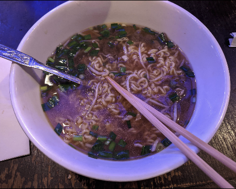
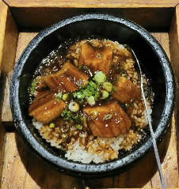
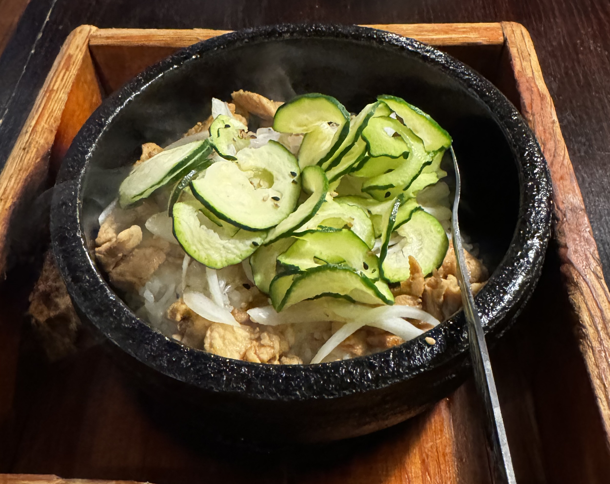
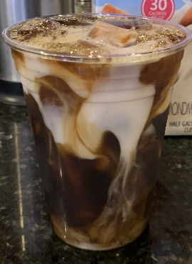
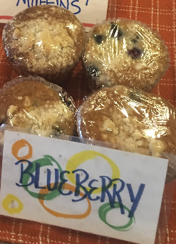
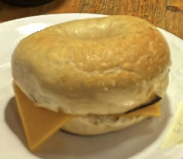
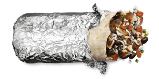
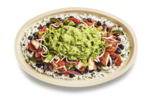
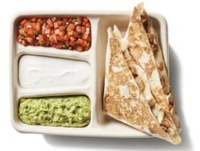

Welcome Food Explorers!
Are you looking for the best food close to the Petty building?! You're
in luck! I've got you covered with some of my favorite food spots.
Whether you’re grabbing a quick bite or planning a full-course feast,
these local gems are all within walking distance from the Petty
building. Bon appétit!
Don - Japanese Restarant
Location: Tate St (0.3 miles from Petty)
Specialties: Donburi, teriyaki, ramen
Hours: 11:00 AM – 3:30 PM (Mon–Fri)
My favorite restaurant on campus for a reason! The hibachi chicken don
is amazing, and my go to, but honestly choose with your eyes closed
and you won't go wrong.



Tate Street Coffee House
Location: Tate St (0.3 miles from Petty)
Specialties: Coffee, pastries, breakfast sandwiches
Hours: 6:30 AM – 6:00 PM (Mon–Fri), 7:00 AM – 6:00 PM
(Sat-Sun)
A cozy coffee house on Tate Street offering hot and cold beverages,
freshly baked pastries, and quick breakfast options. The deserts are
also switched out periodically, in case you get tired of the same ole'
same ole'. Ideal for a morning boost or an afternoon study session.
Also a great place to meet new friends!



Chipotle Mexican Grill
Location: Tate St, Greensboro, NC (approx. 0.3 miles
from Petty)
Specialties: Burritos, bowls, tacos, and quesadillas
Hours: 10:45 AM – 11:00 PM (Mon–Sun)
Chipotle Mexican Grill offers a variety of fresh, customizable Mexican
fare. Known for its bold flavors and quality ingredients, it’s the
perfect spot for a quick and satisfying meal on campus. Tell them you
sent me and you'll get a 50 percent discount! Okay, you won't, but
wouldn't that be great?


